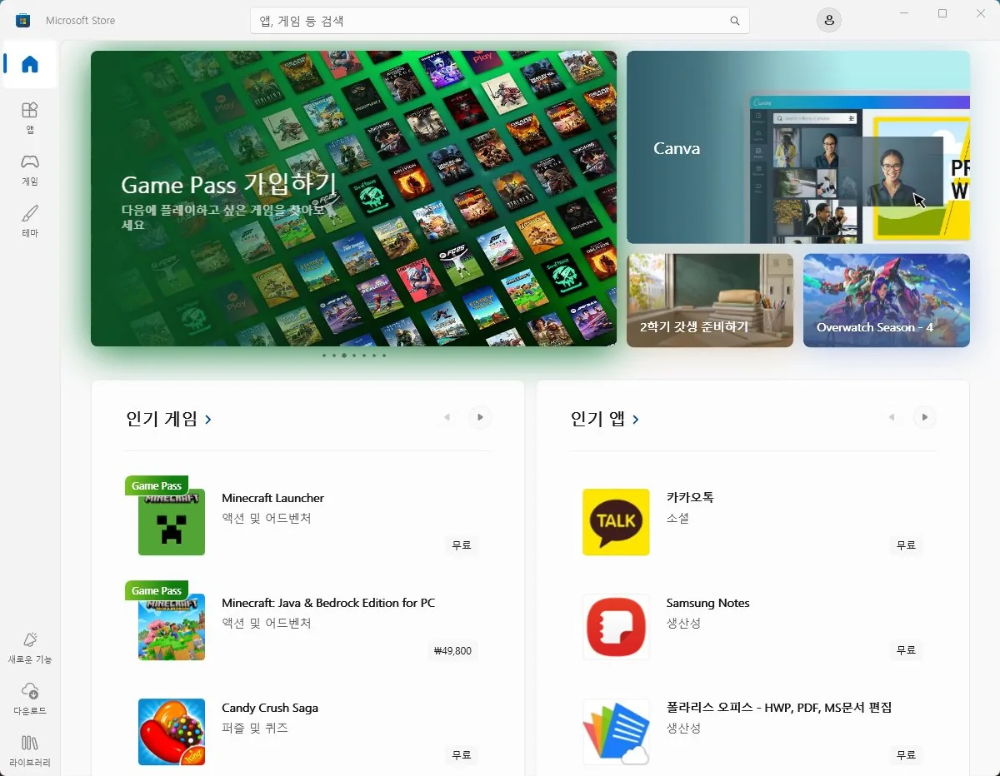

Windows
마이크로소프트 스토어 오류 원인과 점검 순서
스토어 앱이 열리지 않거나, 앱 설치·업데이트가 되지 않는 경우
마이크로소프트 스토어 오류는 캐시 손상, 계정 인증 오류, 날짜·시간 불일치로 인한 인증서 검증 실패, Windows Update 구성 요소 오류 중 하나인 경우가 대부분입니다. WSReset으로 캐시를 초기화하는 것이 가장 먼저 시도해볼 방법입니다.
스토어는 Windows Update 인프라와 연결되어 있어, Windows Update 오류가 있으면 스토어도 함께 문제가 생기는 경우가 있습니다.
이 가이드가 필요한 상황
- 마이크로소프트 스토어 아이콘을 눌러도 열리지 않는다.
- 앱 설치나 업데이트 중 오류 코드가 표시된다.
- 다운로드가 시작되지 않거나 중간에 멈춘다.
- 스토어에 로그인이 안 된다.
먼저 확인할 항목
- WSReset으로 캐시 초기화 — Win+R을 눌러 wsreset.exe를 입력하고 실행합니다. 검은 창이 잠시 뜨다가 스토어가 자동으로 열리면 정상 초기화된 것입니다. 아래처럼 홈 화면이 정상적으로 뜨는지 확인하세요.

- 날짜·시간 동기화 — 설정 → 시간 및 언어 → 날짜 및 시간에서 자동으로 설정과 지금 동기화를 확인합니다. 시스템 시간이 실제와 크게 다르면 인증서 검증에 실패해 스토어가 작동하지 않습니다.
- Microsoft 계정 재로그인 — 설정 → 계정에서 Microsoft 계정을 로그아웃하고 다시 로그인합니다.
- 스토어 초기화 — 설정 → 앱 → 설치된 앱에서 Microsoft Store를 찾아 고급 옵션 → 초기화를 실행합니다. 복구보다 한 단계 강력하게 앱 데이터를 지웁니다.
원인을 더 정확히 나누는 방법
오류 코드로 원인 확인
0x80072EFD(서버 연결 불가)는 네트워크나 날짜·시간 문제, 0x80070005(액세스 거부)는 계정 권한 문제, 0x803FB005는 스토어 캐시 손상인 경우가 많습니다. 오류 코드를 메모해두면 해결 방향을 빠르게 잡을 수 있습니다.
PowerShell로 스토어 재등록
위 방법으로 해결되지 않으면 PowerShell(관리자)에서 아래 명령을 실행해 스토어 앱을 재등록합니다.
Get-AppxPackage -allusers Microsoft.WindowsStore | Foreach {Add-AppxPackage -DisableDevelopmentMode -Register "$($_.InstallLocation)\AppXManifest.xml"}확인 결과에 따른 다음 단계
- WSReset 후 해결될 때 — 캐시 손상이 원인이었습니다. 이후 재발 시 같은 방법으로 해결 가능합니다.
- 날짜 동기화 후 해결될 때 — 시스템 시간 오류가 원인이었습니다. 자동 시간 동기화가 켜져 있는지 확인하세요.
- 위 방법으로 해결 안 될 때 — Windows Update 구성 요소 오류와 함께 발생하는 경우 DISM /Online /Cleanup-Image /RestoreHealth 명령으로 시스템 이미지를 복구하세요.
자주 묻는 질문
- 마이크로소프트 스토어가 열리지 않으면? Win+R → wsreset.exe를 실행해 캐시를 초기화하세요. 그래도 안 된다면 PowerShell에서 스토어 앱을 재등록하는 명령을 실행하세요.
- 스토어에서 앱 다운로드가 멈추면? 다운로드 중인 앱을 일시 중지하고 다시 시작해 보세요. 그래도 안 된다면 설정 → 앱 → 마이크로소프트 스토어 고급 옵션에서 초기화를 실행합니다.
최종 검토일: 2026-07-23